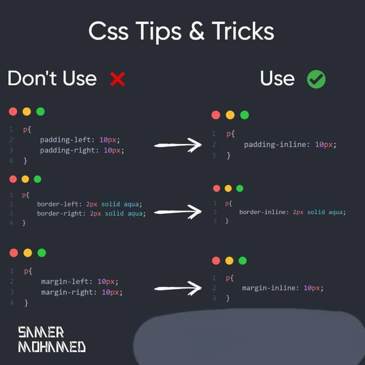

Web Design Trends 2026
Web design trends for 2026 focus on ** intelligent personalization, immersive experiences, and human-centric, accessible design**, heavily influenced by AI, with key themes including agentic AI, organic shapes, kinetic typography, dark modes, and a blend of minimalism with bold, dopamine-driven colors, all while prioritizing performance, sustainability, and inclusive UXSS.
Read MoreCSS Tips & Tricks

- Flexbox vs Grid: When to Use Which
- CSS Variables for Better Theming
- Advanced Selectors You Should Know
- Modern Layout & Alignment
- Responsive Design Techniques
JavaScript for Beginners

JavaScript is one of the three core technologies for web development (alongside HTML and CSS) and an excellent programming language for beginners due to its high demand and extensive learning resources. It adds interactivity and functionality to websites and runs directly in any web browser, providing instant feedback as you learn.
Read More